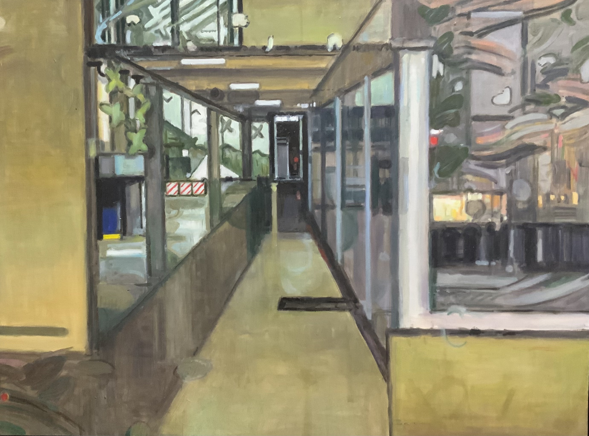

关于艺术家 / 创作实践在现实与
在现实与
内心之间
陈丹青是一位以油画为主要媒介的艺术创作者，持续关注风景、日常空间与人的精神状态。

我的艺术创作始于对“风景”的重新定义。在我看来，风景不仅是自然的呈现，也是人类情感与精神状态的投射。我尝试通过油画，将自然景观与内心世界结合，呈现介于现实与内心之间的视觉经验。
创作中，我持续留意混沌、迷失、孤独与疏离等感受。熟悉的场景有时会变得陌生，平常的空间也可能带有心理的重量。我希望作品为观者留下进入和思考的余地，让个人经验与共同感受在画面中相遇。
这段文字根据现有艺术简介整理，之后可继续结合具体作品修订。
实践媒介
油画 / 绘画
持续关注
风景与内心经验
日常空间与记忆
孤独、疏离与身份感
近期工作
整理作品系列、创作过程与展览资料。
此处为测试版内容，后续可补充真实经历。
让下一次对话
从作品开始。
邮箱与社交平台链接待补充
返回作品集 ↗